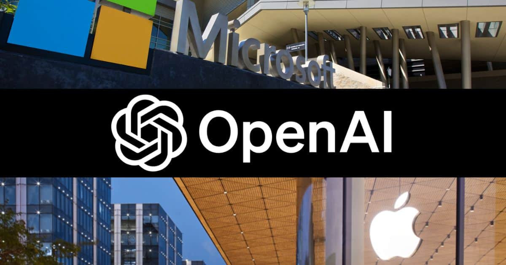

[Công Nghệ] Apple chen chân vào mối quan hệ giữa Microsoft và OpenAI
Apple được cho là sẽ tham
gia vào vòng gọi vốn tiếp theo của OpenAI – nhà phát triển ChatGPT.
Microsoft hiện đang là một trong những nhà đầu tư lớn của startup này.
Tại Hội nghị Nhà phát triển thế giới (WWDC) 2024, Apple thông báo sẽ
hợp tác với OpenAI để đưa một số tính năng AI của startup lên Apple
Intelligence. Theo Wall Street Journal, “Táo khuyết” đang cân nhắc đầu tư vào nhà phát triển ChatGPT trong vòng gọi vốn tiếp theo.
Động thái của Apple có thể củng cố quan hệ làm ăn với OpenAI, đồng
thời “giẫm chân” Microsoft – một nhà đầu tư lớn của họ. Truyền thông đưa
tin nhà sản xuất Windows đã đầu tư 13 tỷ USD vào OpenAI. Công ty vẫn
đang thống trị thị trường AI bất chấp một năm sóng gió.

Truyền thông đưa tin Apple sẽ đầu tư vào OpenAI, startup đang được Microsoft hậu thuẫn. Ảnh: macobserver
Đầu năm nay, OpenAI được định giá 80 tỷ USD, tăng từ 29 tỷ USD năm
2023. Doanh thu thường niên vượt 2 tỷ USD. Công ty tăng trưởng bứt phá
vào cuối năm 2022 sau khi giới thiệu ChatGPT và tiếp tục cung cấp các
sản phẩm dành cho doanh nghiệp, cũng như mở rộng sang lĩnh vực tạo ảnh
và video AI.
Tuần trước, OpenAI thông báo sẽ ra mắt nguyên mẫu công cụ tìm kiếm
SearchGPT, giúp người dùng tìm ra câu trả lời chính xác và kịp thời với
các nguồn tin liên quan, rõ ràng. Công ty dự định tích hợp công cụ vào
chatbot ChatGPT.
SearchGPT sẽ ảnh hưởng đến vị trí của Google trên thị trường tìm
kiếm. CEO OpenAI Sam Altman tin rằng “vẫn còn không gian để làm cho tìm
kiếm tốt hơn nhiều so với ngày nay”.
Nhà phân tích Jacob Bourne của hãng nghiên cứu eMarketer nhận xét
khoản đầu tư tiềm năng của Apple nhấn mạnh cạnh tranh căng thẳng và rủi
ro cao trong cuộc đua AI. Nó phản ánh sự chuyển dịch trong bức tranh AI
mà ở đó, những người chơi lớn, bao gồm Microsoft, đều phải đa dạng hóa
đối tác để duy trì cạnh tranh.
Các nhà đầu tư khác dự kiến tham gia vòng gọi vốn bao gồm Thrive Capital, Microsoft, Nvidia.
Wall Street Journal chỉ ra, khoản đầu tư hiện tại của
Microsoft vào OpenAI cho họ quyền hưởng 49% lợi nhuận OpenAI. Điều này
sẽ khiến các điều khoản giữa OpenAI và Apple cùng các hãng khác phức tạp
hơn.
Apple và Microsoft có lịch sử đối đầu hàng thập kỷ, từ thời Steve
Jobs và Bill Gates vẫn tại nhiệm. Cả hai được định giá hơn 3.000 tỷ USD,
trong khi cuộc đua AI đang đưa họ đến với mức vốn hóa 4.000 tỷ USD.
Theo Insider, CEO Microsoft Satya Nadella bày tỏ lo ngại
trước cái bắt tay giữa Apple và OpenAI. Khi Apple công bố các tính năng
AI tại WWDC, nhà sản xuất iPhone đã đi sau các đối thủ như Google,
Microsoft. Tuy nhiên, khi rót vốn vào OpenAI, hãng muốn theo kịp những
“gã khổng lồ” khác.